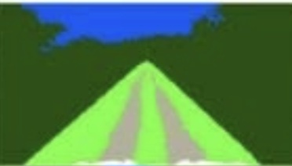

Zero-Shot Annotation · SAM2 + CLIP
Class-agnostic mask proposals + zero-shot semantic classification
2
Segment · no classes
SAM2
mask proposals
32 × 32 point grid.
Mask area thresholds:
keep 0.15%–55% of the frame.
3
Crop
Region crops
Each mask's bounding box,
widened 15% for context.
Batched 32 at a time.
4
Zero-shot label
CLIP scoring
Crop embedding vs text embeddings.
Cosine similarity → softmax.
Highest scoring class wins.
1
Once, before any image
Prompt vocabulary → CLIP text embeddings
dirt trackgrasstreebushsky
5
Filter
Mask NMS
CLIP score < 0.28 → unlabelled, dropped.
Overlap at IoU ≥ 0.70 suppressed,
higher scoring mask kept.
6
Write
Export
COCO jsonindex masks
per image jsonoverlay jpg

Semantic / index mask · labelled